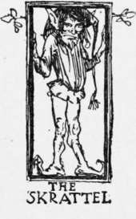

The Bear And The Skrattel. Part 3
Description
This section is from the book "Household Tales by Brothers Grimm", by Brothers Grimm. Also available from Amazon: Household Tales by Brothers Grimm.
The Bear And The Skrattel. Part 3
Meantime Gunter had become sadly frightened, and seeing the oven door open, crept in for shelter from the fray, and lay there quaking for fear. The struggle went on thus a long time, without its seeming at all clear who would get the better—biting, scratching, hugging, clawing, roaring, and growling, till the whole house rang. The elf, however, seemed to grow weaker and weaker: the rivals stood for a moment as if to get breath, and the bear was getting ready for a fierce attack, when, all in a moment, the skrattel dashed his red cap right in his eye, and while Bruin was smarting with the blow and trying to recover his sight, darted to the door, and was out of sight in a moment, though the wind blew, the rain pattered, and the storm raged, in a merciless manner.
" Well done ! Bravo, Bruin ! " cried the huntsman, as he crawled out of the oven, and ran and bolted the door : " thou hast combed his locks rarely; and as for thine own ears, they are rather the worse for pulling. But come, let us make the best of the good cheer our friend has left us! " So saying, they fell to and ate a hearty supper. The huntsman, wishing the skrattel a good night and pleasant dreams in a cup of his sparkling ale, laid himself down and slept till morning; and Bruin tried to do the same, as well as his aching bones would let him.
In the morning the huntsman made ready to set out on his way: and had not got far from the door before he met the woodman, who was eager to hear how he had passed the night. Then Gunter told him how he had been awakened, what sort of creature the elf was, and how he and Bruin had fought it out. " Let us hope," said he, " you will now be well rid of the gentleman: I suspect he will not come where he is likely to get any more of Bruin's hugs; and thus you will be well paid for your entertainment of us, which, to tell the truth, was none of the best: for if your ugly little tenant had not brought his suppei with him, we should have had but empty stomachs this morning."
The huntsman and his fellow-traveller journeyed on: and let us hope they reached the King of Denmark safe and sound: but, to tell the truth, I know nothing more of that part of the story.
The woodman, meantime, went to his work; and did not fail to watch at night to see whether the skrattel came, or whether he was thoroughly frightened out of his old haunt by the bear, or whatever he might take the beast to be that had handled him as he never was handled before. But three nights passed over, and no traces being seen or heard of him, the woodman began to think of moving back to his old house.
On the fourth day he was out at his work in the forest; and as he was taking shelter under a tree from a cold storm of sleet and rain that passed over, he heard a little cracked voice singing, or rather croaking in a mournful tone. So he crept along quietly, and peeped over some bushes, and there sat the very same figure that the huntsman had described to him. The goblin was sitting without any hat or cap on his head, with a woe-begone face, and with his jacket torn into shreds, and his leg scratched and smeared with blood, as if he had been creeping through a bramble-bush. The woodman listened quietly to his song, and it ran as before—
"Oh! 'tis weary enough abroad to bide,
In the shivery midnight blast;
And 'tis dreamy enough alone to ride
Hungry and cold,
On the wintry mold,
Where the drifting snow falls fast."
" Sing us the other verse, man!" cried the woodman; for he could not help cracking a joke on his old enemy, who he saw was sadly in the dumps at the loss of his good cheer and the shelter against the bad weather. But the instant his voice was heard the little imp jumped up, stamped with rage, and was out of sight in the twinkling of an eye.
The woodman finished his work and was going home in the evening, whistling by his horse's side, when, all of a sudden, he saw, standing on a high bank by the wayside, the very same little imp, looking as grim and sulky as before. " Hark ye, bumpkin! " cried the skrattel; "canst thou hear, fellow? Is thy great cat alive, and at home still?" "My cat?" said the woodman. "Thy great white cat, man!" thundered out the little imp. "Oh, my cat!" said the woodman, at last recollecting himself. " Oh, yes to be sure! alive and well, I thank you: very happy, I'm sure, to see you and all friends, whenever you will do us the favour to call. And hark ye, friend! as you seem to be so fond of my great cat, you may like to know that she had five kittens last night." "Five kittens?" muttered the elf. "Yes," replied the woodman, "five of the most beautiful white kits you ever saw,—so like the old cat, it would do your heart good to see the whole family—such soft, gentle paws—such delicate whiskers—such pretty little mouths! " " Five kittens ?" muttered or rather shrieked out the imp again. " Yes, to be sure! " said the woodman; " five kittens! Do look in to-night, about twelve o'clock—the time, you know, that you used to come and see us. The old cat will be so glad to show them to you, and we shall be so happy to see you once more. But where can you have been all this time?"
"I come? not I, indeed!" shrieked the skrattel. "What do I want with the little wretches? Did not I see the mother once ? Keep your kittens to yourself: I must be off,—this is no place for me. Five kittens! So there are six of them now! Good-bye to you, you'll see me no more; so bad luck to your ugly cat and your beggarly house! " " And bad luck to you, Mr Crookback! " cried the woodman, as he threw him the red cap he had left behind in his battle with Bruin. "Keep clear of my cat, and let us hear no more of your pranks, and be hanged to you! "
So, now that he knew his troublesome guest had taken his leave, the woodman soon moved back all his goods, and his wife and children, into their snug old house. And there they lived happily, for the elf never came to see them any more; and the woodman every day after dinner drank, " Long life to the King of Norway," for sending the cat that cleared his house of vermin.

Continue to:
Tags
fairy tales, children's stories, brothers grimm, household tales